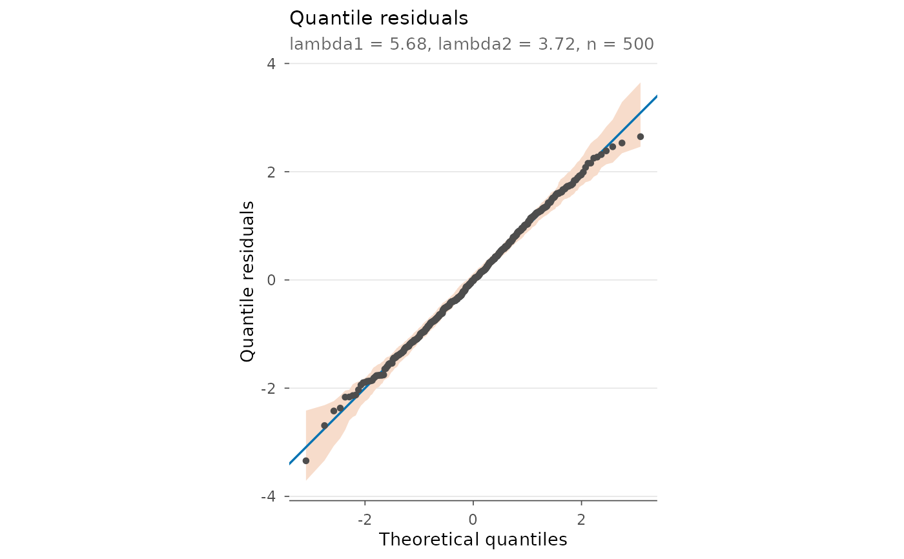

Plots comparing data with a fitted Skellam distribution or Skellam
regression. All plots are ggplot2 objects, so they can be modified
with +; ggplot2 must be installed.
Usage
# S3 method for class 'skellam_fit'
plot(
x,
type = c("rootogram", "pmf", "pit", "qq"),
style = c("hanging", "standing"),
bins = 10,
envelope = 99,
...
)
# S3 method for class 'skellam_reg'
plot(
x,
type = c("rootogram", "pmf", "pit", "qq"),
style = c("hanging", "standing"),
bins = 10,
envelope = 99,
...
)
# S3 method for class 'skellam_fit'
autoplot(object, ...)
# S3 method for class 'skellam_reg'
autoplot(object, ...)Arguments
- x, object
A fit from
skellam.fitorskellam.reg.- type
"rootogram"(default) Hanging rootogram (Kleiber and Zeileis 2016): bars of \(\sqrt{\mathrm{observed}}\) hang from the curve of \(\sqrt{\mathrm{expected}}\); a bar ending below 0 means too few expected, above 0 too many. Dashed lines at \(\pm 1\) are a rough guide.
"pmf"Observed relative frequencies (bars) and fitted probabilities (points; averaged over observations for a regression).
"pit"Non-randomised probability integral transform histogram for count data (Czado, Gneiting and Held 2009); flat at 1 when the model is right, with a shaded 95\ histogram of the same size.
"qq"Normal QQ plot of randomised quantile residuals (Dunn and Smyth 1996), with a pointwise 95\ random numbers; set a seed for reproducible plots.
- style
For the rootogram:
"hanging"(default) or"standing".- bins
Number of bins of the PIT histogram.
- envelope
Number of simulated normal samples for the QQ envelope (0 for none).
- ...
Unused.
References
Czado, C., Gneiting, T. and Held, L. (2009) Predictive model assessment for count data. Biometrics 65(4), 1254-1261.
Dunn, P. K. and Smyth, G. K. (1996) Randomized quantile residuals. Journal of Computational and Graphical Statistics 5(3), 236-244.
Kleiber, C. and Zeileis, A. (2016) Visualizing count data regressions using rootograms. The American Statistician 70(3), 296-303.
Examples
if (requireNamespace("ggplot2", quietly = TRUE)) {
set.seed(1)
fit <- skellam.fit(rpois(500, 6) - rpois(500, 4))
plot(fit) # hanging rootogram
plot(fit, type = "pmf")
plot(fit, type = "pit")
plot(fit, type = "qq") + ggplot2::ggtitle("Quantile residuals")
}
